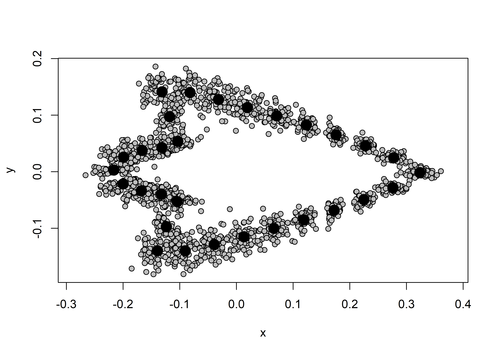
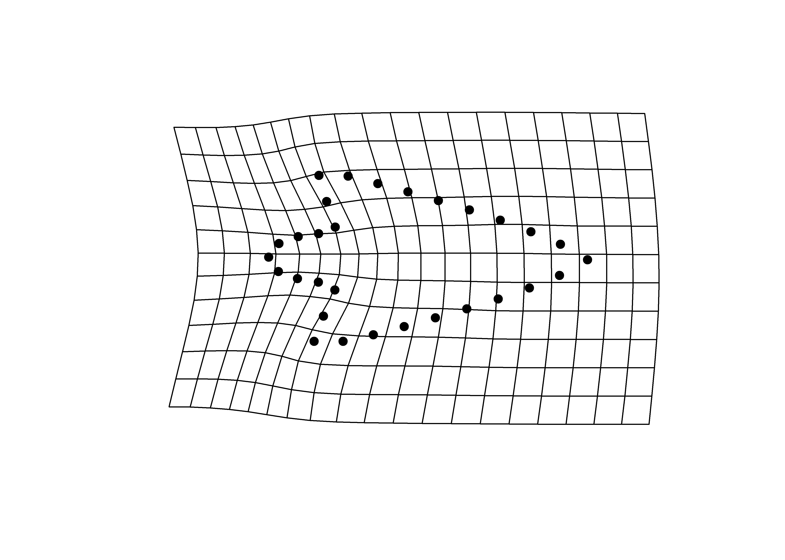
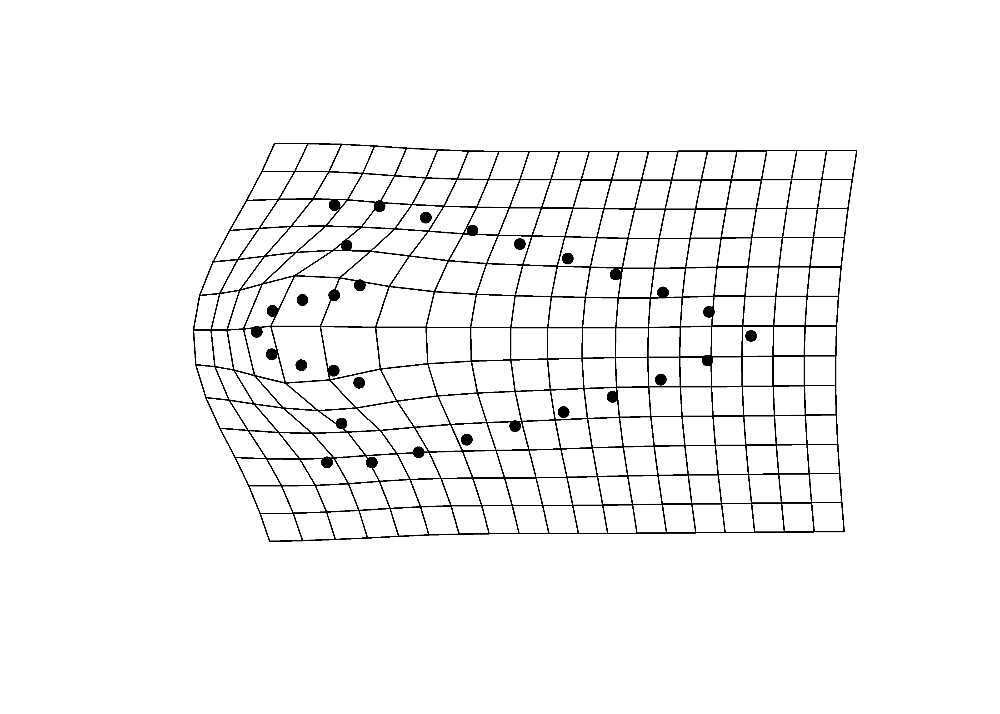
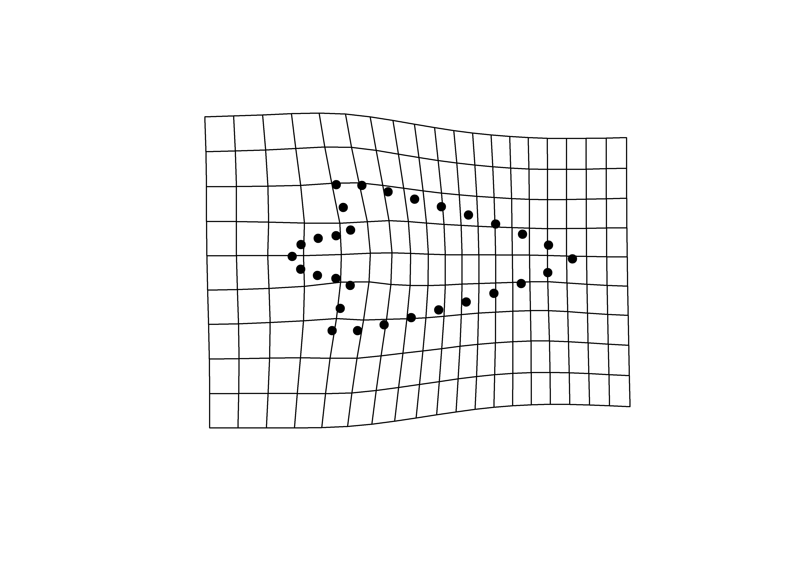
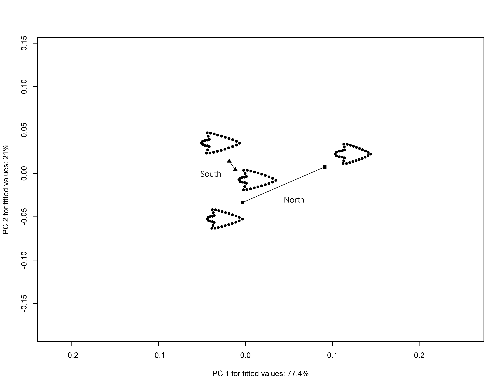

Chapter 3 Geometric morphometrics
Two size classes (large/small) were used to examine whether the morphology of Perdiz arrow points from the northern and southern behavioural regions in the ancestral Caddo region remain morphologically stable, or express morphological variation. Variability in Perdiz arrow point shape potentially provides evidence associated with differential resharpening trajectories.
This analysis follows recent analyses of Perdiz arrow points (Selden and Dockall, in review) and Gahagan biface morphology across the southern Caddo area and central Texas (Selden Jr., Dockall, and Shafer 2018; Selden Jr., Dockall, and Dubied 2020), where Perdiz arrow points and Gahagan bifaces have been found to differ in shape across the same geography as Caddo bottles (Selden Jr. 2018a, 2018b, 2019, 2021).
It also follows another geometric morphometric analysis in which Perdiz arrow points from the ancestral Caddo area were found to differ as a function of time, raw material, and burial context (Selden Jr et al. 2021).
3.1 Load packages + data
# load analysis packages
library(here)
library(StereoMorph)
library(geomorph)
library(ggplot2)
library(dplyr)
library(ggpubr)
library(wesanderson)
# read shape data and define number of sLMs
shapes <- readShapes("shapes")
shapesGM <- readland.shapes(shapes,
nCurvePts = c(10,3,5,5,3,10))
# read qualitative data
qdata <- read.csv("qdata.morph.csv",
header = TRUE,
row.names = 1)3.2 Generalised Procrustes Analysis
Landmark data were aligned to a global coordinate system (Kendall 1981, 1984; Slice 2001), achieved through generalized Procrustes superimposition (Rohlf and Slice 1990) performed in R 4.1.3 (R Core Development Team, 2022) using the geomorph library v. 4.0.3 (Adams et al. 2017; Adams and Otarola-Castillo 2013; Baken et al. 2021). Procrustes superimposition translates, scales, and rotates the coordinate data to allow for comparisons among objects (Gower 1975; Rohlf and Slice 1990). The geomorph package uses a partial Procrustes superimposition that projects the aligned specimens into tangent space subsequent to alignment in preparation for the use of multivariate methods that assume linear space (Rohlf 1999; Slice 2001).
# gpa
Y.gpa <- gpagen(shapesGM, print.progress = FALSE)
## plot
plot(Y.gpa)
# dataframe
gdf <- geomorph.data.frame(shape = Y.gpa$coords,
size = Y.gpa$Csize,
merged = qdata$merged)
# add centroid size to qdata
qdata$csz <- Y.gpa$Csize3.3 Boxplot (centroid size)
# attributes
csz <- qdata$csz
merged <- qdata$merged
# palette
pal <- wes_palette("Moonrise2", 4, type = "continuous")
# boxplot of Perdiz arrow points by merged
ggplot(qdata, aes(x = merged, y = csz, color = merged)) +
geom_boxplot() +
geom_dotplot(binaxis = 'y', stackdir = 'center', dotsize = 0.3) +
scale_color_manual(values = pal) +
theme(legend.position = "none") +
labs(x = 'Size Class', y = 'Centroid Size')## Bin width defaults to 1/30 of the range of the data. Pick better value with `binwidth`.3.4 Principal Components Analysis
Principal components analysis (Jolliffe 2002) was used to visualise shape variation among the Perdiz arrow points. The shape changes described by each principal axis are commonly visualized using thin-plate spline warping of a reference 3D mesh (Klingenberg 2013; Sherratt et al. 2014).
# pca
pca <- gm.prcomp(Y.gpa$coords)
summary(pca)##
## Ordination type: Principal Component Analysis
## Centering by OLS mean
## Orthogonal projection of OLS residuals
## Number of observations: 67
## Number of vectors 58
##
## Importance of Components:
## Comp1 Comp2 Comp3 Comp4 Comp5
## Eigenvalues 0.005773408 0.004263677 0.00110953 0.0002718422 0.0002235284
## Proportion of Variance 0.475367265 0.351059970 0.09135581 0.0223827748 0.0184047395
## Cumulative Proportion 0.475367265 0.826427234 0.91778304 0.9401658161 0.9585705557
## Comp6 Comp7 Comp8 Comp9
## Eigenvalues 0.0001238687 9.341316e-05 5.630102e-05 3.794795e-05
## Proportion of Variance 0.0101990267 7.691394e-03 4.635678e-03 3.124534e-03
## Cumulative Proportion 0.9687695824 9.764610e-01 9.810967e-01 9.842212e-01
## Comp10 Comp11 Comp12 Comp13
## Eigenvalues 3.555976e-05 3.274869e-05 2.100995e-05 1.673629e-05
## Proportion of Variance 2.927897e-03 2.696441e-03 1.729904e-03 1.378022e-03
## Cumulative Proportion 9.871491e-01 9.898455e-01 9.915754e-01 9.929535e-01
## Comp14 Comp15 Comp16 Comp17
## Eigenvalues 1.558522e-05 0.0000146522 9.479467e-06 8.202708e-06
## Proportion of Variance 1.283246e-03 0.0012064237 7.805144e-04 6.753894e-04
## Cumulative Proportion 9.942367e-01 0.9954431225 9.962236e-01 9.968990e-01
## Comp18 Comp19 Comp20 Comp21
## Eigenvalues 6.581542e-06 5.623302e-06 4.551824e-06 4.004696e-06
## Proportion of Variance 5.419068e-04 4.630079e-04 3.747852e-04 3.297361e-04
## Cumulative Proportion 9.974409e-01 9.979039e-01 9.982787e-01 9.986085e-01
## Comp22 Comp23 Comp24 Comp25
## Eigenvalues 2.780295e-06 2.539899e-06 2.053898e-06 1.684806e-06
## Proportion of Variance 2.289221e-04 2.091286e-04 1.691126e-04 1.387225e-04
## Cumulative Proportion 9.988374e-01 9.990465e-01 9.992156e-01 9.993543e-01
## Comp26 Comp27 Comp28 Comp29
## Eigenvalues 1.383734e-06 1.008708e-06 9.296041e-07 7.104462e-07
## Proportion of Variance 1.139330e-04 8.305433e-05 7.654116e-05 5.849627e-05
## Cumulative Proportion 9.994683e-01 9.995513e-01 9.996279e-01 9.996864e-01
## Comp30 Comp31 Comp32 Comp33
## Eigenvalues 6.995574e-07 5.611282e-07 4.574896e-07 3.740460e-07
## Proportion of Variance 5.759972e-05 4.620182e-05 3.766849e-05 3.079797e-05
## Cumulative Proportion 9.997440e-01 9.997902e-01 9.998278e-01 9.998586e-01
## Comp34 Comp35 Comp36 Comp37
## Eigenvalues 3.295267e-07 3.023244e-07 2.819142e-07 1.822967e-07
## Proportion of Variance 2.713236e-05 2.489260e-05 2.321208e-05 1.500983e-05
## Cumulative Proportion 9.998858e-01 9.999107e-01 9.999339e-01 9.999489e-01
## Comp38 Comp39 Comp40 Comp41
## Eigenvalues 1.544787e-07 1.175824e-07 1.003652e-07 8.345271e-08
## Proportion of Variance 1.271937e-05 9.681424e-06 8.263810e-06 6.871277e-06
## Cumulative Proportion 9.999616e-01 9.999713e-01 9.999796e-01 9.999864e-01
## Comp42 Comp43 Comp44 Comp45
## Eigenvalues 3.996616e-08 3.159475e-08 2.666575e-08 2.255638e-08
## Proportion of Variance 3.290708e-06 2.601429e-06 2.195587e-06 1.857233e-06
## Cumulative Proportion 9.999897e-01 9.999923e-01 9.999945e-01 9.999964e-01
## Comp46 Comp47 Comp48 Comp49
## Eigenvalues 1.462538e-08 8.448002e-09 6.927099e-09 3.723904e-09
## Proportion of Variance 1.204216e-06 6.955863e-07 5.703591e-07 3.066164e-07
## Cumulative Proportion 9.999976e-01 9.999983e-01 9.999988e-01 9.999991e-01
## Comp50 Comp51 Comp52 Comp53
## Eigenvalues 3.152719e-09 2.374219e-09 1.963601e-09 1.208301e-09
## Proportion of Variance 2.595866e-07 1.954869e-07 1.616777e-07 9.948832e-08
## Cumulative Proportion 9.999994e-01 9.999996e-01 9.999998e-01 9.999999e-01
## Comp54 Comp55 Comp56 Comp57
## Eigenvalues 6.656422e-10 4.846033e-10 2.571792e-10 1.910708e-10
## Proportion of Variance 5.480723e-08 3.990096e-08 2.117546e-08 1.573227e-08
## Cumulative Proportion 9.999999e-01 1.000000e+00 1.000000e+00 1.000000e+00
## Comp58
## Eigenvalues 8.289472e-11
## Proportion of Variance 6.825333e-09
## Cumulative Proportion 1.000000e+00# set plot parameters
pch.gps <- c(1:4)[as.factor(merged)]
col.gps <- pal[as.factor(merged)]
col.hull <- c("#798E87", "#C27D38", "#CCC591", "#29211F")
## pca plot
pc.plot <- plot(pca,
asp = 1,
pch = pch.gps,
col = col.gps)
shapeHulls(pc.plot,
groups = merged,
group.cols = col.hull)3.4.1 Minima/maxima of PC1/2 with warp grids
# plot x/y maxima/minima
## x - minima
mean.shape <- mshape(Y.gpa$coords)
plotRefToTarget(pca$shapes$shapes.comp1$min,
mean.shape)
## x - maxima
plotRefToTarget(pca$shapes$shapes.comp1$max,
mean.shape)
## y - minima
plotRefToTarget(pca$shapes$shapes.comp2$min,
mean.shape)
## y - maxima
plotRefToTarget(pca$shapes$shapes.comp2$max,
mean.shape)

3.5 Procrustes ANOVA: Allometry
To assess whether shape changes with size (allometry), Procrustes ANOVAs (Goodall 1991) were run that enlist effect-sizes (zscores) computed as standard deviates of the generated sampling distributions (M. L. Collyer, Sekora, and Adams 2015). A residual randomization permutation procedure (RRPP; n = 10,000 permutations) was used for all Procrustes ANOVAs (Adams and Collyer 2015; M. L. Collyer and Adams 2018), which has higher statistical power and a greater ability to identify patterns in the data should they be present (Anderson and Ter Braak 2003).
# allometry
fit.size <- procD.lm(shape ~ size,
data = gdf,
print.progress = FALSE,
iter = 9999)
# allometry
anova(fit.size)##
## Analysis of Variance, using Residual Randomization
## Permutation procedure: Randomization of null model residuals
## Number of permutations: 10000
## Estimation method: Ordinary Least Squares
## Sums of Squares and Cross-products: Type I
## Effect sizes (Z) based on F distributions
##
## Df SS MS Rsq F Z Pr(>F)
## size 1 0.11834 0.118340 0.14763 11.258 3.7912 1e-04 ***
## Residuals 65 0.68324 0.010511 0.85237
## Total 66 0.80158
## ---
## Signif. codes: 0 '***' 0.001 '**' 0.01 '*' 0.05 '.' 0.1 ' ' 1
##
## Call: procD.lm(f1 = shape ~ size, iter = 9999, data = gdf, print.progress = FALSE)# unique allometries?
fit.unique <- procD.lm(shape ~ size * merged,
data = gdf,
print.progress = FALSE,
iter = 9999)
# unique allometries
anova(fit.unique)##
## Analysis of Variance, using Residual Randomization
## Permutation procedure: Randomization of null model residuals
## Number of permutations: 10000
## Estimation method: Ordinary Least Squares
## Sums of Squares and Cross-products: Type I
## Effect sizes (Z) based on F distributions
##
## Df SS MS Rsq F Z Pr(>F)
## size 1 0.11834 0.118340 0.14763 12.7163 3.9820 1e-04 ***
## merged 3 0.05847 0.019488 0.07294 2.0941 1.8027 0.0357 *
## size:merged 3 0.07571 0.025238 0.09446 2.7120 2.3035 0.0105 *
## Residuals 59 0.54906 0.009306 0.68497
## Total 66 0.80158
## ---
## Signif. codes: 0 '***' 0.001 '**' 0.01 '*' 0.05 '.' 0.1 ' ' 1
##
## Call: procD.lm(f1 = shape ~ size * merged, iter = 9999, data = gdf,
## print.progress = FALSE)# plot
## PredLine (Adams and Nistri 2010)
plotAllometry(fit.unique,
size = gdf$size,
logsz = TRUE,
method = "PredLine",
pch = pch.gps,
col = col.gps)
3.6 Procrustes ANOVA: Shape and size
To assess whether shape and size differ by size class, Procrustes ANOVAs (Goodall 1991) were run that enlist effect-sizes (zscores) computed as standard deviates of the generated sampling distributions (M. L. Collyer, Sekora, and Adams 2015). A residual randomization permutation procedure (RRPP; n = 10,000 permutations) was used for all Procrustes ANOVAs (Adams and Collyer 2015; M. L. Collyer and Adams 2018), which has higher statistical power and a greater ability to identify patterns in the data should they be present (Anderson and Ter Braak 2003).
# shape
fit.sh.reg <- procD.lm(shape ~ merged,
data = gdf,
print.progress = FALSE,
iter = 9999)
# difference in shape by size class?
anova(fit.sh.reg)##
## Analysis of Variance, using Residual Randomization
## Permutation procedure: Randomization of null model residuals
## Number of permutations: 10000
## Estimation method: Ordinary Least Squares
## Sums of Squares and Cross-products: Type I
## Effect sizes (Z) based on F distributions
##
## Df SS MS Rsq F Z Pr(>F)
## merged 3 0.10010 0.033367 0.12488 2.9966 2.6487 0.0038 **
## Residuals 63 0.70148 0.011135 0.87512
## Total 66 0.80158
## ---
## Signif. codes: 0 '***' 0.001 '**' 0.01 '*' 0.05 '.' 0.1 ' ' 1
##
## Call: procD.lm(f1 = shape ~ merged, iter = 9999, data = gdf, print.progress = FALSE)# pairwise comparison of LS means = which differ?
pw.sh.reg <- pairwise(fit.sh.reg,
groups = qdata$merged)
summary(pw.sh.reg,
confidence = 0.95,
test.type = "dist")##
## Pairwise comparisons
##
## Groups: north_L north_S south_L south_S
##
## RRPP: 10000 permutations
##
## LS means:
## Vectors hidden (use show.vectors = TRUE to view)
##
## Pairwise distances between means, plus statistics
## d UCL (95%) Z Pr > d
## north_L:north_S 0.10303874 0.07924105 2.4114393 0.0046
## north_L:south_L 0.05011667 0.06117665 1.0941187 0.1436
## north_L:south_S 0.03985408 0.06060269 0.4950596 0.3217
## north_S:south_L 0.11012158 0.07324844 2.8681547 0.0009
## north_S:south_S 0.10319047 0.07251068 2.7027293 0.0017
## south_L:south_S 0.01657002 0.05318001 -1.2603364 0.8892summary(pw.sh.reg,
confidence = 0.95,
test.type = "var")##
## Pairwise comparisons
##
## Groups: north_L north_S south_L south_S
##
## RRPP: 10000 permutations
##
##
## Observed variances by group
##
## north_L north_S south_L south_S
## 0.006787206 0.005489185 0.014294381 0.010785645
##
## Pairwise distances between variances, plus statistics
## d UCL (95%) Z Pr > d
## north_L:north_S 0.001298021 0.008215484 -0.7703831 0.7705
## north_L:south_L 0.007507174 0.006331946 1.9109252 0.0179
## north_L:south_S 0.003998439 0.006306974 0.8197400 0.2223
## north_S:south_L 0.008805195 0.007545685 1.8779461 0.0229
## north_S:south_S 0.005296460 0.007527743 0.9698512 0.1756
## south_L:south_S 0.003508735 0.005577969 0.8097440 0.2263# size
fit.sz.reg <- procD.lm(size ~ merged,
data = gdf,
print.progress = FALSE,
iter = 9999)
# size
anova(fit.sz.reg)##
## Analysis of Variance, using Residual Randomization
## Permutation procedure: Randomization of null model residuals
## Number of permutations: 10000
## Estimation method: Ordinary Least Squares
## Sums of Squares and Cross-products: Type I
## Effect sizes (Z) based on F distributions
##
## Df SS MS Rsq F Z Pr(>F)
## merged 3 22.934 7.6446 0.34701 11.16 4.1706 1e-04 ***
## Residuals 63 43.155 0.6850 0.65299
## Total 66 66.089
## ---
## Signif. codes: 0 '***' 0.001 '**' 0.01 '*' 0.05 '.' 0.1 ' ' 1
##
## Call: procD.lm(f1 = size ~ merged, iter = 9999, data = gdf, print.progress = FALSE)# pairwise comparison of LS means = which differ?
pw.sz.reg <- pairwise(fit.sz.reg,
groups = qdata$merged)
summary(pw.sz.reg,
confidence = 0.95,
test.type = "dist")##
## Pairwise comparisons
##
## Groups: north_L north_S south_L south_S
##
## RRPP: 10000 permutations
##
## LS means:
## Vectors hidden (use show.vectors = TRUE to view)
##
## Pairwise distances between means, plus statistics
## d UCL (95%) Z Pr > d
## north_L:north_S 0.70995445 0.8650155 1.239690 0.1086
## north_L:south_L 0.95927394 0.6787305 2.290754 0.0048
## north_L:south_S 0.86926347 0.6665158 2.085959 0.0100
## north_S:south_L 1.66922839 0.7998731 3.165704 0.0003
## north_S:south_S 1.57921791 0.7949796 3.023732 0.0003
## south_L:south_S 0.09001048 0.5770700 -0.757120 0.7638summary(pw.sz.reg,
confidence = 0.95,
test.type = "var")##
## Pairwise comparisons
##
## Groups: north_L north_S south_L south_S
##
## RRPP: 10000 permutations
##
##
## Observed variances by group
##
## north_L north_S south_L south_S
## 0.1558141 0.2508603 1.0774395 0.6636123
##
## Pairwise distances between variances, plus statistics
## d UCL (95%) Z Pr > d
## north_L:north_S 0.09504627 1.1068396 -0.9529234 0.8200
## north_L:south_L 0.92162545 0.7850100 1.8707244 0.0160
## north_L:south_S 0.50779827 0.7740054 0.8131151 0.2357
## north_S:south_L 0.82657918 1.0495700 1.3338421 0.0999
## north_S:south_S 0.41275200 1.0577282 0.4528552 0.3255
## south_L:south_S 0.41382718 0.6422389 0.6691898 0.28363.7 Modularity
land.gps <- c("A","A","B","B","B","A","A","A","A","A","A","A","A","A",
"B","B","B","B","B","B","B","B","A","A","A","A","A","A",
"A","A")
mod <- modularity.test(Y.gpa$coords,
partition.gp = land.gps,
iter = 9999,
seed = NULL,
opt.rot = TRUE,
print.progress = FALSE)
summary(mod)##
## Call:
## modularity.test(A = Y.gpa$coords, partition.gp = land.gps, iter = 9999,
## seed = NULL, opt.rot = TRUE, print.progress = FALSE)
##
##
##
## CR: 0.94387
##
## P-value: 6e-04
##
## Effect Size: -4.7686
##
## Based on 10000 random permutations## modularity plot
plot(mod)3.8 Morphological integration
it <- integration.test(Y.gpa$coords,
partition.gp = land.gps,
print.progress = FALSE,
iter = 9999)
summary(it)##
## Call:
## integration.test(A = Y.gpa$coords, partition.gp = land.gps, iter = 9999,
## print.progress = FALSE)
##
##
##
## r-PLS: 0.9676
##
## Effect Size (Z): 6.23893
##
## P-value: 1e-04
##
## Based on 10000 random permutations## integration plot
plot(it)3.9 Trajectory analysis
# trajectory analysis::shape
TA <- trajectory.analysis(fit.sh.reg,
groups = qdata$region,
traj.pts = qdata$size,
print.progress = FALSE)
# magnitude difference
summary(TA,
attribute = "MD")##
## Trajectory analysis
##
## 10000 permutations.
##
## Points projected onto trajectory PCs
##
## Trajectories:
## Trajectories hidden (use show.trajectories = TRUE to view)
##
## Observed path distances by group
##
## north south
## 0.10303874 0.01657002
##
## Pairwise absolute differences in path distances, plus statistics
## d UCL (95%) Z Pr > d
## north:south 0.08646872 0.05328336 2.511681 0.0017# plot
TP <- plot(TA,
pch = as.numeric(qdata$region),
bg = as.numeric(qdata$size),
cex = 0.9,
col = "gray")
add.trajectories(TP,
traj.pch = c(15, 17),
traj.cex = 1)
knitr::include_graphics('img/img2/trajectory.png')
3.10 Morphological disparity
# morphological disparity in shape
morphol.disparity(fit.sh.reg,
groups = qdata$merged,
data = gdf,
print.progress = FALSE,
iter = 9999)##
## Call:
## morphol.disparity(f1 = fit.sh.reg, groups = qdata$merged, iter = 9999,
## data = gdf, print.progress = FALSE)
##
##
##
## Randomized Residual Permutation Procedure Used
## 10000 Permutations
##
## Procrustes variances for defined groups
## north_L north_S south_L south_S
## 0.006787206 0.005489185 0.014294381 0.010785645
##
##
## Pairwise absolute differences between variances
## north_L north_S south_L south_S
## north_L 0.000000000 0.001298021 0.007507174 0.003998439
## north_S 0.001298021 0.000000000 0.008805195 0.005296460
## south_L 0.007507174 0.008805195 0.000000000 0.003508735
## south_S 0.003998439 0.005296460 0.003508735 0.000000000
##
##
## P-Values
## north_L north_S south_L south_S
## north_L 1.0000 0.7705 0.0179 0.2223
## north_S 0.7705 1.0000 0.0229 0.1756
## south_L 0.0179 0.0229 1.0000 0.2263
## south_S 0.2223 0.1756 0.2263 1.0000# morphological disparity in size
morphol.disparity(fit.sz.reg,
groups = qdata$merged,
data = gdf,
print.progress = FALSE,
iter = 9999)##
## Call:
## morphol.disparity(f1 = fit.sz.reg, groups = qdata$merged, iter = 9999,
## data = gdf, print.progress = FALSE)
##
##
##
## Randomized Residual Permutation Procedure Used
## 10000 Permutations
##
## Procrustes variances for defined groups
## north_L north_S south_L south_S
## 0.1558141 0.2508603 1.0774395 0.6636123
##
##
## Pairwise absolute differences between variances
## north_L north_S south_L south_S
## north_L 0.00000000 0.09504627 0.9216254 0.5077983
## north_S 0.09504627 0.00000000 0.8265792 0.4127520
## south_L 0.92162545 0.82657918 0.0000000 0.4138272
## south_S 0.50779827 0.41275200 0.4138272 0.0000000
##
##
## P-Values
## north_L north_S south_L south_S
## north_L 1.0000 0.8200 0.0160 0.2357
## north_S 0.8200 1.0000 0.0999 0.3255
## south_L 0.0160 0.0999 1.0000 0.2836
## south_S 0.2357 0.3255 0.2836 1.0000